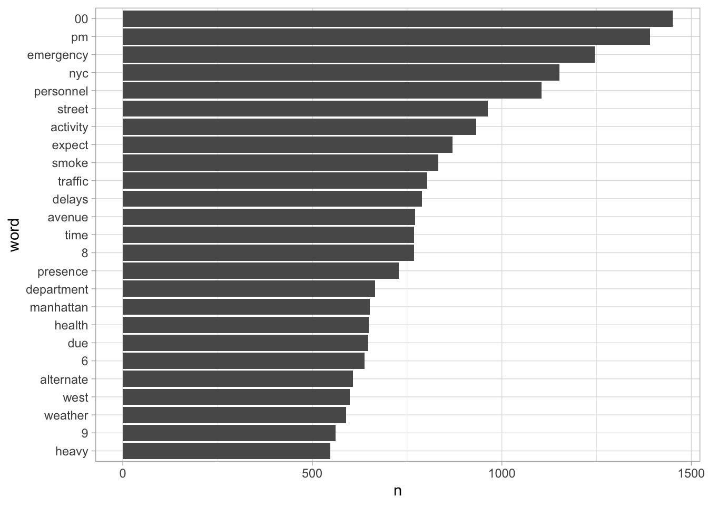

# A tibble: 6 × 6
record_id date_and_time notification_type notification_title email_body
<dbl> <chr> <chr> <chr> <chr>
1 209 5/11/09 10:00 zINAC * Aerial (Fly-Ove… [blank] This is a…
2 210 5/15/09 8:00 zINAC * Drills / Exerci… [blank] This is a…
3 211 5/16/09 17:00 zINAC * Drills / Exerci… [blank] This is a…
4 212 5/17/09 17:00 zINAC * Drills / Exerci… [blank] This is a…
5 213 5/19/09 9:45 zINAC * Aerial (Fly-Ove… [blank] This is a…
6 214 5/20/09 9:30 zINAC * Aerial (Fly-Ove… [blank] This is a…
# ℹ 1 more variable: cleaned_text <chr>Text Analysis Workshop
Hello and welcome to tidy text analytics!
This Quarto document covers an example workflow of how to process and analyze open ended text data.
In our first section we’ll be load the main libraries we’ll need to start and load in our data
Next we’ll convert our data into a tidy format with one row per word per message
tidy_words <- data |>
select(record_id, date_and_time, notification_type, cleaned_text) |>
unnest_tokens(word, cleaned_text) |>
anti_join(stop_words)Joining with `by = join_by(word)`head(tidy_words)# A tibble: 6 × 4
record_id date_and_time notification_type word
<dbl> <chr> <chr> <chr>
1 209 5/11/09 10:00 zINAC * Aerial (Fly-Over) faa
2 209 5/11/09 10:00 zINAC * Aerial (Fly-Over) planned
3 209 5/11/09 10:00 zINAC * Aerial (Fly-Over) military
4 209 5/11/09 10:00 zINAC * Aerial (Fly-Over) flyover
5 209 5/11/09 10:00 zINAC * Aerial (Fly-Over) cancelled
6 210 5/15/09 8:00 zINAC * Drills / Exercises starting tidy_words# A tibble: 564,149 × 4
record_id date_and_time notification_type word
<dbl> <chr> <chr> <chr>
1 209 5/11/09 10:00 zINAC * Aerial (Fly-Over) faa
2 209 5/11/09 10:00 zINAC * Aerial (Fly-Over) planned
3 209 5/11/09 10:00 zINAC * Aerial (Fly-Over) military
4 209 5/11/09 10:00 zINAC * Aerial (Fly-Over) flyover
5 209 5/11/09 10:00 zINAC * Aerial (Fly-Over) cancelled
6 210 5/15/09 8:00 zINAC * Drills / Exercises starting
7 210 5/15/09 8:00 zINAC * Drills / Exercises 9
8 210 5/15/09 8:00 zINAC * Drills / Exercises 00
9 210 5/15/09 8:00 zINAC * Drills / Exercises morning
10 210 5/15/09 8:00 zINAC * Drills / Exercises continuing
# ℹ 564,139 more rowsHere we can start to explore the most common words that show up in our corpus
tidy_words |>
count(word, sort = TRUE) |>
top_n(20)Selecting by n# A tibble: 20 × 2
word n
<chr> <int>
1 expect 9796
2 delays 9545
3 due 9027
4 alternate 7997
5 street 7945
6 routes 7705
7 time 7658
8 travel 7367
9 service 7321
10 additional 7208
11 avenue 5761
12 00 5733
13 traffic 5733
14 pm 5432
15 brooklyn 5165
16 queens 5142
17 manhattan 4657
18 1 4514
19 vehicle 4376
20 issued 4299Given that we have categories of interest in our data set, we can also filter per category to see common words across categories of interest
tidy_words |>
filter(notification_type == "Planned Events") |>
count(word, sort = TRUE) |>
top_n(20)Selecting by n# A tibble: 20 × 2
word n
<chr> <int>
1 pm 243
2 approximately 131
3 00 119
4 street 100
5 30 99
6 6 90
7 9 89
8 nypd 83
9 10 79
10 activity 79
11 7 75
12 brooklyn 74
13 manhattan 71
14 aircraft 68
15 emergency 68
16 occur 66
17 1 64
18 12 64
19 fdny 64
20 11 63data |> count(notification_type)# A tibble: 18 × 2
notification_type n
<chr> <int>
1 Emergency Activity 1778
2 Local Mass Transit 2734
3 Mass Transit Restoration 907
4 Missing Person 2154
5 Nixle 434
6 Planned Events 338
7 Public Health 1057
8 Regional Mass Transit 43
9 School Notification 210
10 Transportation 9013
11 Utility 1895
12 Weather 2540
13 zINAC * Aerial (Fly-Over) 559
14 zINAC * Drills / Exercises 316
15 zINAC * Environmental 937
16 zINAC * Fire 557
17 zINAC * Parking 137
18 <NA> 68Tables are great but we can also present this information graphically
tidy_words |>
filter(notification_type %in% c("Emergency Activity", "Public Health")) |>
count(word, sort = TRUE) |>
top_n(25) |>
mutate(word = fct_reorder(word, n)) |>
ggplot(aes(n, word)) +
geom_col()Selecting by n
Another example where we split our plot of common words by categories of interest
tidy_words |>
filter(notification_type %in% c("Emergency Activity", "Public Health",
"Local Mass Transit")) |>
group_by(notification_type) |>
count(word, sort = TRUE) |>
top_n(10) |>
ggplot(aes(n, word, fill = notification_type)) +
geom_col() +
facet_wrap(~ notification_type)Selecting by nLet’s move into some sentiment analyses where we can examine the emotional valence of our text data. To do that we can leverage existing sentiment lexicons (validated dictionaries) that categorize words by specific emotions or quantify them by means of polarity (e.g negative to positive).
The tidytext package provides a few sentiment dictionaries which are useful. However, don’t feel limited. Other lexicons exist in the form of data frames that can be added on to your data of interest. In certain instances it may be useful to customize a lexicon, or create one of your own.
head(get_sentiments("nrc"))# A tibble: 6 × 2
word sentiment
<chr> <chr>
1 abacus trust
2 abandon fear
3 abandon negative
4 abandon sadness
5 abandoned anger
6 abandoned fear head(get_sentiments("afinn"))# A tibble: 6 × 2
word value
<chr> <dbl>
1 abandon -2
2 abandoned -2
3 abandons -2
4 abducted -2
5 abduction -2
6 abductions -2head(get_sentiments("bing"))# A tibble: 6 × 2
word sentiment
<chr> <chr>
1 2-faces negative
2 abnormal negative
3 abolish negative
4 abominable negative
5 abominably negative
6 abominate negative
Let’s first explore the NRC lexicon which categorizes words across a series of emotions (e.g positive, negative, fear, trust, anticipation, etc).
We can take our tidy words data frame and inner join the nrc lexicon onto our data. Now our data-set has an additional feature categorizing each word by a particular emotion
nrc_text <- tidy_words |>
inner_join(get_sentiments("nrc"), by = "word")Warning in inner_join(tidy_words, get_sentiments("nrc"), by = "word"): Detected an unexpected many-to-many relationship between `x` and `y`.
ℹ Row 16 of `x` matches multiple rows in `y`.
ℹ Row 4308 of `y` matches multiple rows in `x`.
ℹ If a many-to-many relationship is expected, set `relationship =
"many-to-many"` to silence this warning.nrc_text# A tibble: 185,398 × 5
record_id date_and_time notification_type word sentiment
<dbl> <chr> <chr> <chr> <chr>
1 209 5/11/09 10:00 zINAC * Aerial (Fly-Over) military fear
2 210 5/15/09 8:00 zINAC * Drills / Exercises county trust
3 210 5/15/09 8:00 zINAC * Drills / Exercises emergency fear
4 210 5/15/09 8:00 zINAC * Drills / Exercises emergency negative
5 210 5/15/09 8:00 zINAC * Drills / Exercises emergency sadness
6 210 5/15/09 8:00 zINAC * Drills / Exercises emergency surprise
7 211 5/16/09 17:00 zINAC * Drills / Exercises trade trust
8 211 5/16/09 17:00 zINAC * Drills / Exercises center positive
9 211 5/16/09 17:00 zINAC * Drills / Exercises center trust
10 211 5/16/09 17:00 zINAC * Drills / Exercises emergency fear
# ℹ 185,388 more rowsLet’s explore the proportion of emotion words in our data set.
First via a table
emotion_prop <- nrc_text |>
count(sentiment, sort = TRUE) |>
mutate(prop = n / sum(n))
emotion_prop# A tibble: 10 × 3
sentiment n prop
<chr> <int> <dbl>
1 positive 37430 0.202
2 anticipation 29375 0.158
3 negative 26541 0.143
4 fear 24015 0.130
5 trust 18780 0.101
6 surprise 17224 0.0929
7 sadness 14158 0.0764
8 anger 9994 0.0539
9 joy 4856 0.0262
10 disgust 3025 0.0163And now by a graph
emotion_prop |>
mutate(sentiment = fct_reorder(sentiment, prop)) |>
ggplot(aes(prop, sentiment, fill = sentiment)) +
geom_col()Let’s see if we can see some differences across categories. For this example we’ll focus on Local Mass Transit and Transportation
nrc_text |>
filter(notification_type == "Local Mass Transit") |>
count(sentiment, sort = TRUE) |>
mutate(prop = n / sum(n)) |>
mutate(sentiment = fct_reorder(sentiment, prop)) |>
ggplot(aes(prop, sentiment, fill = sentiment)) +
geom_col()
nrc_text |>
filter(notification_type == "Transportation") |>
count(sentiment, sort = TRUE) |>
mutate(prop = n / sum(n)) |>
mutate(sentiment = fct_reorder(sentiment, prop)) |>
ggplot(aes(prop, sentiment, fill = sentiment)) +
geom_col()We’re not limited to a mere categorical analysis - for example one approach we can use is examining the frequency or count of words tied to certain emotions across groups.
As we see in our comparison between transportation and local mass transit it would appear that transportation has a higher frequency of words related to anticipation. Let’s see if this difference is statistically significant.
To do this we can process our data to count the number of emotion based words per approach
nrc_counts <- nrc_text |>
group_by(record_id) |>
count(sentiment) |>
ungroup() |>
pivot_wider(names_from = sentiment,
values_from = n,
values_fill = 0) |>
left_join(data, by = "record_id")
nrc_counts# A tibble: 23,142 × 16
record_id anticipation fear negative sadness surprise trust positive joy
<dbl> <int> <int> <int> <int> <int> <int> <int> <int>
1 1 1 1 1 1 1 1 0 0
2 2 1 0 0 0 0 0 0 0
3 3 1 0 0 0 0 0 0 0
4 4 2 2 2 2 2 0 1 0
5 5 1 0 0 0 0 0 0 0
6 6 1 1 1 0 0 1 1 0
7 7 1 1 1 1 2 2 1 1
8 9 0 0 0 0 1 0 1 0
9 10 0 1 1 1 0 0 1 0
10 11 0 3 3 2 1 0 1 0
# ℹ 23,132 more rows
# ℹ 7 more variables: disgust <int>, anger <int>, date_and_time <chr>,
# notification_type <chr>, notification_title <chr>, email_body <chr>,
# cleaned_text <chr>Now we can build a statistical model. Since we’re working with count data we’ll build a Poisson regression model.
anticipation_model <- nrc_counts |>
filter(notification_type %in% c("Local Mass Transit", "Transportation")) |>
mutate(notification_type = as.factor(notification_type)) %$%
glm(anticipation ~ notification_type, family = poisson)
anticipation_model
Call: glm(formula = anticipation ~ notification_type, family = poisson)
Coefficients:
(Intercept) notification_typeTransportation
0.09865 0.39180
Degrees of Freedom: 11408 Total (i.e. Null); 11407 Residual
Null Deviance: 4959
Residual Deviance: 4561 AIC: 29680We see the relative to local mass transit, transportation has a higher count of anticipation words and that this difference is statistically significant
summary(anticipation_model)
Call:
glm(formula = anticipation ~ notification_type, family = poisson)
Deviance Residuals:
Min 1Q Median 3Q Max
-1.8072 -0.5340 0.2773 0.2773 2.6233
Coefficients:
Estimate Std. Error z value Pr(>|z|)
(Intercept) 0.09865 0.01872 5.269 1.37e-07 ***
notification_typeTransportation 0.39180 0.02049 19.120 < 2e-16 ***
---
Signif. codes: 0 '***' 0.001 '**' 0.01 '*' 0.05 '.' 0.1 ' ' 1
(Dispersion parameter for poisson family taken to be 1)
Null deviance: 4958.7 on 11408 degrees of freedom
Residual deviance: 4560.6 on 11407 degrees of freedom
AIC: 29682
Number of Fisher Scoring iterations: 5Taking the exponent our coefficient we see this is pretty sizable difference!
exp(anticipation_model$coefficients[2])notification_typeTransportation
1.479644 Let’s take a dive into the type of anticipation words that exist across these two categories
nrc_text |>
filter(sentiment == "anticipation",
notification_type %in% c("Transportation", "Local Mass Transit")) |>
count(word, sort = TRUE)# A tibble: 91 × 2
word n
<chr> <int>
1 expect 7054
2 time 6680
3 closure 1610
4 approaching 408
5 rail 262
6 tomorrow 172
7 investigation 166
8 track 95
9 church 67
10 parade 55
# ℹ 81 more rowsWe’re not limited to a frequency count. As we saw when we were exploring other sentiment lexicons we can leverage dictionaries that quantify words by polarity. This allows us to take the sum or average sentiment score across a particular text.
afinn_text <- tidy_words |>
inner_join(get_sentiments("afinn"), by = "word") |>
group_by(record_id) |>
summarise(avg_val = mean(value, na.rm = TRUE)) |>
ungroup() |>
left_join(data, by = "record_id")
afinn_text# A tibble: 16,809 × 7
record_id avg_val date_and_time notification_type notification_title
<dbl> <dbl> <chr> <chr> <chr>
1 1 -2 5/22/09 15:23 Utility Blank
2 2 1 5/22/09 17:56 Utility [blank]
3 4 -2 5/30/09 17:00 zINAC * Drills / Exercises [blank]
4 6 -2 6/2/09 16:30 Public Health [blank]
5 7 -2 6/3/09 18:45 Emergency Activity [blank]
6 10 -2 6/21/09 0:00 <NA> [blank]
7 11 -1.67 6/21/09 15:20 <NA> [blank]
8 12 -2 6/25/09 0:00 Utility [blank]
9 13 1.5 6/25/09 0:00 Utility [blank]
10 14 -2 7/1/09 0:00 Local Mass Transit [blank]
# ℹ 16,799 more rows
# ℹ 2 more variables: email_body <chr>, cleaned_text <chr>Let’s see if we see a difference in overall emotional valence between transportation and local mass transit
afinn_val_model <- afinn_text |>
filter(notification_type %in% c("Transportation", "Local Mass Transit")) %$%
lm(avg_val ~ notification_type)
summary(afinn_val_model)
Call:
lm(formula = avg_val ~ notification_type)
Residuals:
Min 1Q Median 3Q Max
-2.2923 -0.5290 -0.5290 -0.2923 5.4710
Coefficients:
Estimate Std. Error t value Pr(>|t|)
(Intercept) -0.70765 0.02672 -26.48 <2e-16 ***
notification_typeTransportation -0.76335 0.03109 -24.55 <2e-16 ***
---
Signif. codes: 0 '***' 0.001 '**' 0.01 '*' 0.05 '.' 0.1 ' ' 1
Residual standard error: 1.155 on 7151 degrees of freedom
Multiple R-squared: 0.07776, Adjusted R-squared: 0.07763
F-statistic: 602.9 on 1 and 7151 DF, p-value: < 2.2e-16afinn_text |>
filter(notification_type %in% c("Transportation", "Local Mass Transit")) %$%
t.test(avg_val ~ notification_type)
Welch Two Sample t-test
data: avg_val by notification_type
t = 25.894, df = 3627.3, p-value < 2.2e-16
alternative hypothesis: true difference in means between group Local Mass Transit and group Transportation is not equal to 0
95 percent confidence interval:
0.7055496 0.8211473
sample estimates:
mean in group Local Mass Transit mean in group Transportation
-0.7076504 -1.4709989 Using both a linear regression and t-test approach we see that this is in fact the case. Let’s wrap our analysis up in a quick summary reporting our findings using the report package
require(report)Loading required package: reportafinn_text |>
filter(notification_type %in% c("Transportation", "Local Mass Transit")) %$%
t.test(avg_val ~ notification_type) |>
report::report()Warning: Unable to retrieve data from htest object.
Returning an approximate effect size using t_to_d().Effect sizes were labelled following Cohen's (1988) recommendations.
The Welch Two Sample t-test testing the difference of avg_val by
notification_type (mean in group Local Mass Transit = -0.71, mean in group
Transportation = -1.47) suggests that the effect is positive, statistically
significant, and large (difference = 0.76, 95% CI [0.71, 0.82], t(3627.31) =
25.89, p < .001; Cohen's d = 0.86, 95% CI [0.79, 0.93])We have some other data of interest instead of notification type, like date and time of each emergency report.
Let’s explore average emotional valence by time of day
afinn_by_hour <- tidy_words |>
filter(notification_type %in% c("Transportation", "Local Mass Transit")) |>
inner_join(get_sentiments("afinn"), by = "word") |>
mutate(hr = hour(mdy_hm(date_and_time))) |>
group_by(notification_type, hr) |>
summarise(avg_val = mean(value, na.rm = TRUE),
sd_val = sd(value, na.rm = TRUE),
n_count = n(),
sem = sd_val / sqrt(n_count)) `summarise()` has grouped output by 'notification_type'. You can override using
the `.groups` argument.afinn_by_hour# A tibble: 48 × 6
# Groups: notification_type [2]
notification_type hr avg_val sd_val n_count sem
<chr> <int> <dbl> <dbl> <int> <dbl>
1 Local Mass Transit 0 -0.532 1.37 190 0.0992
2 Local Mass Transit 1 -0.45 1.52 60 0.197
3 Local Mass Transit 2 -0.889 1.06 54 0.144
4 Local Mass Transit 3 -0.737 1.08 38 0.176
5 Local Mass Transit 4 -0.881 0.790 59 0.103
6 Local Mass Transit 5 -0.792 1.29 125 0.115
7 Local Mass Transit 6 -0.602 1.48 103 0.146
8 Local Mass Transit 7 -0.626 1.23 147 0.101
9 Local Mass Transit 8 -0.674 1.27 138 0.108
10 Local Mass Transit 9 -0.714 1.32 126 0.118
# ℹ 38 more rowsafinn_by_hour |>
ggplot(aes(n_count, avg_val)) +
geom_point() +
geom_smooth(method = "lm")`geom_smooth()` using formula = 'y ~ x'afinn_by_hour |>
ggplot(aes(as.factor(hr), avg_val, group = notification_type,
color = notification_type)) +
geom_point() +
geom_line() +
geom_path() #+ geom_errorbar(mapping = aes(ymin = avg_val - sem, ymax = avg_val + sem))
afinn_mnth <- tidy_words |>
inner_join(get_sentiments("afinn"), by = "word") |>
mutate(mnth = month(mdy_hm(date_and_time))) |>
group_by(mnth) |>
summarise(avg_val = mean(value, na.rm = TRUE),
sd_val = sd(value, na.rm = TRUE),
n_count = n(),
sem = sd_val / sqrt(n_count))
afinn_mnth# A tibble: 12 × 5
mnth avg_val sd_val n_count sem
<dbl> <dbl> <dbl> <int> <dbl>
1 1 -1.26 1.32 2475 0.0265
2 2 -1.31 1.28 2092 0.0281
3 3 -1.33 1.28 2291 0.0266
4 4 -1.30 1.30 2339 0.0269
5 5 -1.15 1.43 2432 0.0289
6 6 -1.19 1.37 2333 0.0283
7 7 -1.10 1.47 3147 0.0263
8 8 -1.13 1.38 2672 0.0268
9 9 -1.14 1.38 2486 0.0278
10 10 -1.12 1.37 2238 0.0289
11 11 -1.26 1.32 2065 0.0290
12 12 -1.25 1.33 2325 0.0275afinn_mnth |>
ggplot(aes(as.factor(mnth), avg_val)) +
geom_point() +
geom_line() +
geom_path(group = 1) +
geom_errorbar(mapping = aes(ymin = avg_val - sem,
ymax = avg_val + sem))`geom_line()`: Each group consists of only one observation.
ℹ Do you need to adjust the group aesthetic?tidy_words |>
filter(notification_type %in% c("Transportation", "Local Mass Transit")) |>
inner_join(get_sentiments("afinn"), by = "word") |>
mutate(hr = hour(mdy_hm(date_and_time))) |>
group_by(notification_type, hr) |>
summarise(avg_val = mean(value, na.rm = TRUE)) |>
ggplot(aes(as.factor(hr), avg_val, group = notification_type,
color = notification_type)) +
geom_point() +
geom_line() +
geom_path()`summarise()` has grouped output by 'notification_type'. You can override using
the `.groups` argument.We’ve asked a lot of quant based questions of our data but let’s start to search for some themes. One approach is to examine the clusters of words that are correlated with each other using the phi correlation coefficient. To accomplish this we’ll add a few more packages that allow us to compute word correlations and graph a node map of our text data
require(ggraph)Loading required package: ggraphrequire(widyr)Loading required package: widyrrequire(igraph)Loading required package: igraph
Attaching package: 'igraph'The following objects are masked from 'package:lubridate':
%--%, unionThe following objects are masked from 'package:dplyr':
as_data_frame, groups, unionThe following objects are masked from 'package:purrr':
compose, simplifyThe following object is masked from 'package:tidyr':
crossingThe following object is masked from 'package:tibble':
as_data_frameThe following objects are masked from 'package:stats':
decompose, spectrumThe following object is masked from 'package:base':
unionword_cors <- tidy_words |>
filter(notification_type == "Transportation") |>
add_count(word) |>
filter(n > 200) |>
pairwise_cor(word, record_id, sort = TRUE) |>
filter(correlation >= .30 & correlation <= .40)
word_cors# A tibble: 66 × 3
item1 item2 correlation
<chr> <chr> <dbl>
1 additional traffic 0.398
2 traffic additional 0.398
3 routes traffic 0.396
4 traffic routes 0.396
5 time traffic 0.395
6 traffic time 0.395
7 alternate traffic 0.394
8 traffic alternate 0.394
9 street east 0.393
10 east street 0.393
# ℹ 56 more rowsWe can now create a node map that will show us clusters of words. Play around with the data itself (filtering across notification types, or specifying correlation bounds) to see what clusters of words pop up.
word_cors |>
graph_from_data_frame() %>%
ggraph(layout = "fr") +
geom_edge_link(aes(edge_alpha = correlation), show.legend = FALSE) +
geom_node_point(color = "lightblue", size = 5) +
geom_node_text(aes(label = name), repel = TRUE) +
theme_void()If you want to highlight certain text patterns and identify that in the data.
Let’s say we want to identify messages that start with “This is a message…”. We can create a case statement using case_when() and grepl()
data |>
mutate(says_the_thing = case_when(grepl("This is a message", email_body) ~ "Yup",
TRUE ~ "Nope")) |>
select(email_body, says_the_thing)# A tibble: 25,677 × 2
email_body says_the_thing
<chr> <chr>
1 This is a message from Notify NYC. Notification 2 issued 05/1… Yup
2 This is a message from Notify NYC. Notification 1 issued 5/15… Yup
3 This is a message from Notify NYC. Notification 1 issued 05/1… Yup
4 This is a message from Notify NYC. Notification 1 issued 05/1… Yup
5 This is a message from Notify NYC. Notification 1 issued 5/19… Yup
6 This is a message from Notify NYC. Notification 1 issued 5/20… Yup
7 This is a message from Notify NYC. Notification 1 issued 5/20… Yup
8 This is a message from Notify NYC. Notification 1 issued 5/21… Yup
9 This is a message from Notify NYC. Notification 1 issued 5/22… Yup
10 Notification 2 issued on 12/04/2009 at 5 PM. All lane closure… Nope
# ℹ 25,667 more rowsFeel free to use this notebook and or the code in it to get started and further explore this data!
Thank you for attending the workshop!